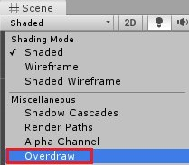
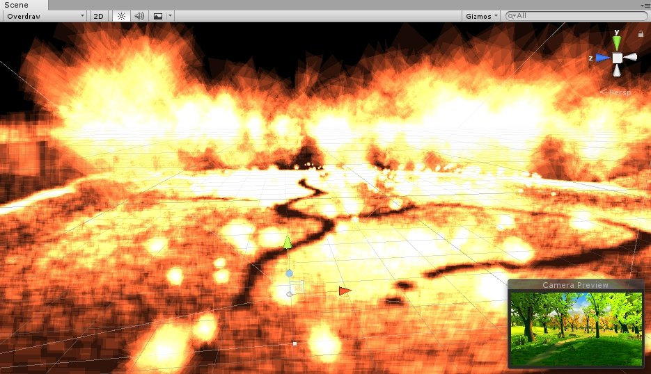

Overdraw 是在同一個像素上重複進行多次繪製的一種狀況。
在理解為什麼會產生這種狀況之前，需要先了解物件的渲染順序。
在 Unity 中的物件都需要透過 Shader 來進行渲染，透過調整 Render Queue 能夠改變物件的渲染順序。
由 Rendering.RenderQueue 中可以得知有許多不同的渲染隊列
Background 對應為 1000
Geometry 對應為 2000
AlphaTest 對應為 2450
Transparent 對應為 3000
Overlay 對應為 4000
在不同的隊列中物體會按照不同的順序進行繪製。
在 Geometry 隊列中，物件會以由前到後 (Front-to-Back)的順序繪製，藉此來避免 Overdraw 的狀況發生。
在 Transparent 隊列中，由於需要呈現透明的疊加效果，所以物件會以由後到前 (Back-to-Front)的順序繪製，因此 Overdraw 的優化絕大部分都是在處理 Transparent 對列中的物件。
如何減少透明物件重疊的情況就是優化 Overdraw 的關鍵。
隨著透明物件重疊的情況越來越嚴重，會開始發現瓶頸漸漸的出現在 GPU 端。
而大多數 GPU 效能瓶頸問題來自於填充率 (Fill Rate)，若該幀的輸出像素數量超過了 GPU 負載限制，就需要針對填充率進行調整。
檢查是否因為填充率導致 GPU 瓶頸很簡單
1. 執行遊戲
2. 調整專案 Game 視窗的解析度
3. 觀察 GPU 效率是否有改變
若調整解析度後效能出現改變即表示填充率導致 GPU 瓶頸
基本有兩種優化方案
1. 優化 Fragment Shader
2. 優化 Overdraw
Unity 中提供了 Scene 視窗的 Overdraw
1. 選擇 Scene 視窗
2. 開啟 Shaded 面板
3. 選擇 Overdraw

透過下圖可以得知，越白的地方即表示該處的 Overdraw 情況越嚴重。

雖然 Unity 有提供上述 Overdraw 查看方法，卻只能透過 Scene 視窗查看，無法得知真實遊戲視角下的 Overdraw 情況。
若是要查看 Game 視窗下的 Overdraw 只要進行簡單的調整即可。
1. 找到 SceneView/SceneViewShowOverdraw.shader
SceneViewShowOverdraw 就是 Scene 視窗下顯示 Overdraw 所使用的 Shader
如果想要使用自己的 Overdraw Shader 也能自行調整
2. 讀取 Shader
由於是編輯環境所以可以直接使用 EditorGUIUtility.LoadRequired 來進行讀取
Shader overdrawShader = EditorGUIUtility.LoadRequired("SceneView/SceneViewShowOverdraw.shader") as Shader;3. 套用 Shader
使用 Camera.SetReplacementShader 將 Overdraw Shader
tempCamera.SetReplacementShader(overdrawShader, "");